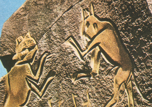

| |
|
Les
catégories de sculptures
Voir
Tête de section Sculpture
Si ces catégories semblent
éternelles, cela n'empêche pas l'apparition de nouvelles formes d'art
sensiblement assimilables - du moins associables - à la sculpture. L'installation
contemporaine semble constituer a priori une nouvelle
catégorie qui sera un jour, peut-être, entièrement assimilée à la
sculpture. Éléments pour un débat ci-dessous.
Quant aux arts de la
lumière, ils semblent encore plus inclassables.
On distingue les catégories suivantes :
* la ronde bosse (lire l'article du
glossaire). A l'intérieur de cette catégorie, les distinctions entre
sculptures monumentales, mobiles, miniatures, motorisées, informatisées, etc.
n'ont rien d'éternel et ne peuvent être l'objet de jugements catégoriques
fiables à long terme.
* les "reliefs",
autour desquels on ne peut tourner sans les voir disparaître. Il s'agit de :

* l'entaille. Pratiquée surtout en Égypte et dans le Sahara
anciens. Les contours sont très marqués, "entaillés" dans la
roche (voir illustration ci-contre, Les chats de Mathendush, Fazzan,
Lybie, néolithique, détail). L'intérieur, les surfaces, sont plus ou moins
modelées, parfois pas du tout.
* le bas-relief écrasé, variété de l'entaille dans laquelle le
creusement est peu profond. Le néolithique européen abonde d'oeuvres de ce
type. L'exemple le plus célèbre et le plus remarquable est certainement
l'hallucinant monument tumulaire de Gavrinis, Morbihan, France.
* le bas-relief est l'objet de définitions parfois très précises.
Trop, serait-on tenté de dire, car si l'avancée d'une forme hors du plan
"doit être inférieure à la moitié de son volume sans
contre-dépouillé" (c'est la définition la plus stricte que nous ayons trouvée), qu'en est-il des bas-reliefs réalisés sur des surfaces
irrégulières ou arrondies ?
Dans un bas-relief, les formes "saillantes" sont généralement
très attachées au fond, en font littéralement partie intégrante.
* le demi-relief. Ce terme peu usité, absent des dictionnaires, est
aussi l'objet de descriptions un peu trop affinées ! Il correspond
surtout, naturellement, à un intermédiaire entre bas-relief et haut-relief.
* le haut-relief. Les formes sont presque entièrement détachées du
fond. Les têtes des maîtres de Ghiberti sur les portes du baptistère de
Florence sont des haut-reliefs.
* les
"installations". Souvent non dénuées d'un caractère
architectural, parfois sculptural, quelquefois pures mises en scène, elles sont
tantôt intérieures, tantôt extérieures, tantôt rondes bosses (lorsque l'on peut
tourner autour), tantôt reliefs (lorsque l'on ne peut pas), et souvent ni tout à
fait l'un ni l'autre (notamment lorsqu'il s'agit d'entrer dans l'oeuvre devenue
lieu). A quel domaine faut-il les rattacher ? Faut-il
considérer cette pratique artistique comme isolée et nouvelle dans l'histoire
de l'art ou bien comme le retour d'un très ancien concept d'art remontant à
une période où les disciplines fusionnaient très facilement autour d'une
expression globale ?
* les arts
de la lumière. Sky art et disciplines proches ont connu leur
véritablement avènement à l'époque nazie avec les travaux d'Albert Speer. Cas
particulier du procès de Nuremberg, cet homme - qui était un architecte -
n'était peut-être pas le tout premier à saisir les possibilités
"artistiques" ou "rituelles" totalement nouvelles offertes
par la lumière électrique. Cependant, il a très bien saisi leur intérêt
dans le domaine de la mise en scène mégalomane hitlérienne.
Son exploitation de la lumière et de l'espace tridimensionnel offert par le
ciel, les bâtiments, les foules, les banderoles, etc., a été largement
reprise dans la seconde moitié du XXème siècle à des fins tantôt
comparables (spectacles de masses), tantôt sans rapport direct (sky art, land
art, etc.).
Dans tous les cas, s'agit-il d'architecture,
c'est-à-dire d'un travail d'ouvrier (cf. glossaire)
? Rien n'est moins sûr.
Ce qui semble assez évident, c'est que la lumière sculpte l'espace plutôt
qu'elle ne le construit et que la question de l'appartenance de cette pratique
à la sculpture n'est pas absurde a priori. La véritable question, a
affiner au cas par cas, semble être de savoir s'il s'agit de scénographie, de
communication ou véritablement d'art.
* L'holographie
est longtemps restée un phénomène mineur difficile à associer aux arts
plastiques. Certes, la lumière semblait sculpter
l'air, mais c'était bien un photographe qui était l'auteur de cette
"sculpture". Or, depuis quelque temps, il semble que l'on soit capable
de produire des hologrammes à partir d'images purement numériques. Il s'agit
donc de véritables créations formelles pouvant prendre un caractère artistique.
Retour
début de page
|
|

 Communication
Communication


|
|